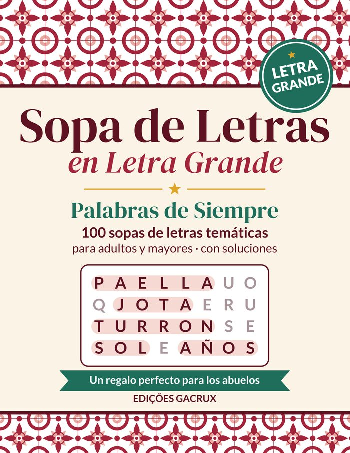
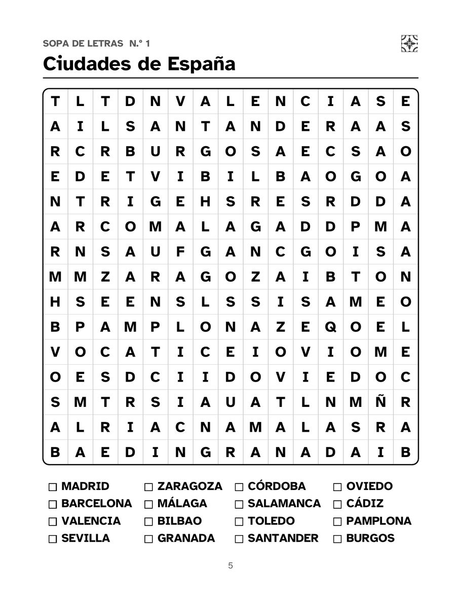
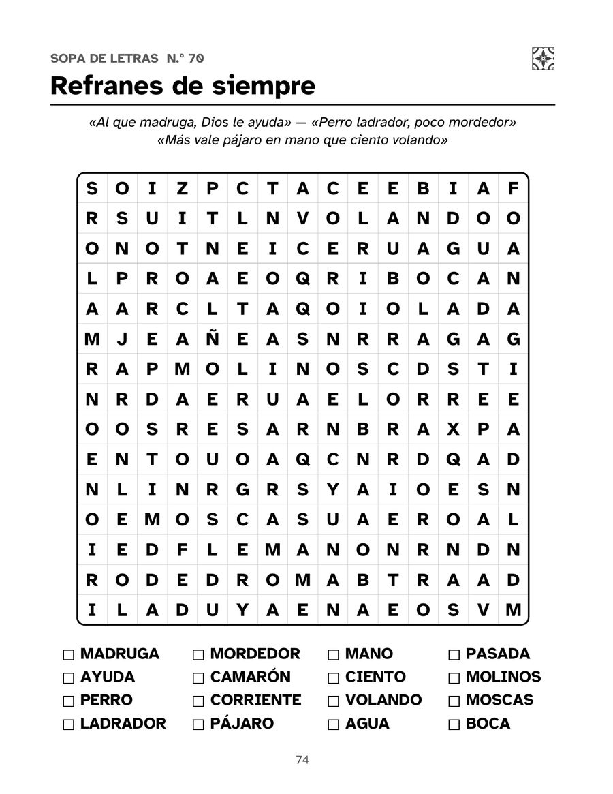
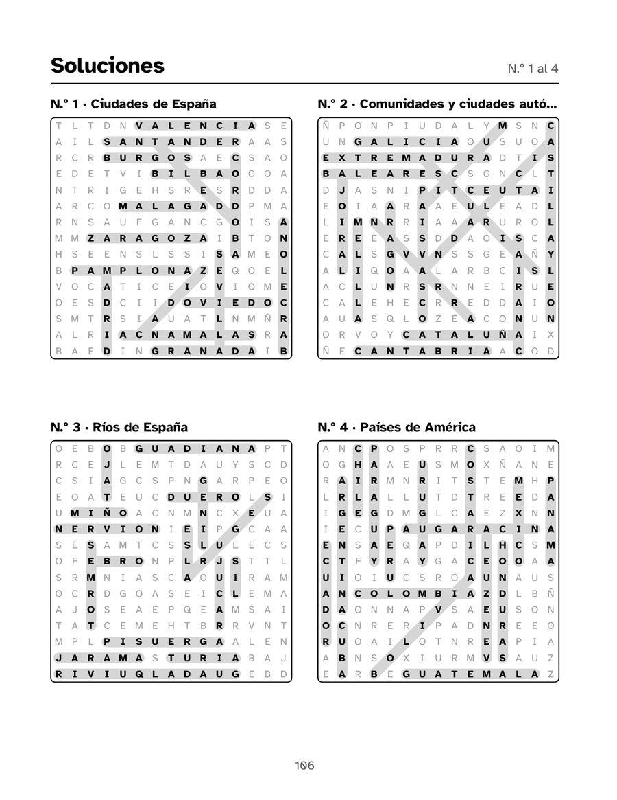

Español (España)
Sopa de Letras en Letra Grande
Palabras de siempre: 100 sopas de letras para mayores
100 sopas de letras en letra grande con palabras de toda la vida: ciudades y pueblos, tapas y postres, fiestas, oficios de antes, juegos de la infancia, refranes y la Navidad. Una por página, en español de España.
PDF con 4 páginas del libro, listo para imprimir. Muestras gratuitas para uso personal y en el aula.
132 páginas · 21,6 × 27,9 cm · tapa blanda · Edições Gacrux
Qué hay en el libro
- Letras de la cuadrícula de 18 pt o más, en una fuente para baja visión
- Una sopa de letras por página, con cuadrículas de 15 × 15
- 100 temas y 1600 palabras
- Nivel asequible: casi todo en horizontal y en vertical
- Todas las soluciones al final del libro
- Página de dedicatoria
Así es por dentro
Toca una página para verla más grande.





